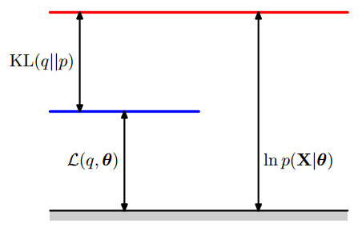
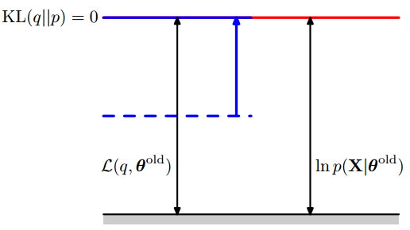
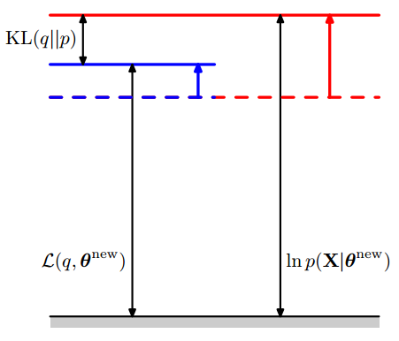

和 最大似然估计 一样， EM算法是机器学习中的一种参数估计方法，在隐式马尔科夫算法(HMM)、LDA主题模型, Gaussian mixture model 等都有应用。本文从最大似然估计作为切入点，逐步论述EM算法的使用情景和原理。
问题引入
我们有两枚硬币, C1 和 C2, 进行抛掷硬币实验(贝努力实验);
假设 C1 取正面的概率 为 $\theta_1$;
假设 C2 取正面的概率 为 $\theta_2$;
通过抛掷实验 估计 $\theta_1$, $\theta_2$.
硬币的方向使用变量 $x$ 表示; 正面记作 $x=1$, 反面记作 $x=0$;
从最大似然估计说起
我们使用硬币C1和C2 分别投掷$n=100$次, 并记录每一次哪一面朝上, 来据估计参数 $\theta_1$和$\theta_2$ . 我们可以使用最大似然估计来计算这两个参数.
对于一次贝努力抛硬币实验中有两个结果，即 $x=1$ 是正面，$x=0$ 是反面，令是正面的概率为$\theta$, 则有：
$$
p(x=1|\theta) = \theta
$$
则$x$的概率分布可写成如下形式:
$$
p(x|\theta) = \theta^x (1-\theta)^{(1-x)}
$$
现在假定有一个 $x$ 的观测数据集 $D=\{x_1, x_2, \dots, x_n\}$，那么我们能够构造出参数 $\theta$ 的似然函数：
$$
L(\theta) = \prod_{i=1}^n p(x_i|\theta)
$$
可以看到 $L(\theta)$ 是连乘的，所以为了便于分析, 可以取对数得到 对数似然函数：
$$
\ln L(\theta) = \ln \prod_{i=1}^n p(x_i|\theta) = \sum_{i=1}^n \ln p(x_i | \theta)
$$
(对数)似然函数对 $\theta$ 求偏导, 并令偏导数等于零即得到了参数 $\theta$ 的估计值.
通过以上方法可以分别估计 C1 取正面的概率 $\theta_1$ 和 C2 取正面的概率 $\theta_2$.
那么我们换一个场景: 我们每一次投掷硬币都有放回的随机的从两枚硬币中选择一个进行投掷. 共进行 $n=100$ 次实验. 那么此时我们最终拿到的是100次硬币的朝向数据 $X=\{x_1, x_2, \dots, x_n\}$ . 但是每一次是用了哪一枚硬币, 我们并不清楚. 在这种情况下怎么才能估计参数 $\theta_1$和$\theta_2$呢?
这个时候，对于每一次投掷，就有两个东西需要估计的了，一是这个数据是C1的还是C2的投掷得到的？二是 C1 取正面的概率 $\theta_1$ 和 C2 取正面的概率 $\theta_2$？ 其中 用于表示 这个数据是C1的还是C2的投掷得到的 变量就是一个未被观测到的隐含变量. EM算法就是用来求包含隐含变量的的模型的最大似然解的算法.
The goal of the EM algorithm is to find maximum likelihood solutions for models having latent variables.
EM算法的思想
假设我们想估计A（C1 or C2）和 B（$\theta$）两个参数，在开始状态下二者都是未知的，但如果知道了A的信息就可以得到B的信息，反过来知道了B也就得到了A。可以考虑首先赋予A某种初值，以此得到B的估计值，然后从B的当前值出发，重新估计A的取值，这个过程一直持续到收敛为止。
下面给出两种关于EM算法的推导: 第一种是网上常见的基于 jensen 不等式的方法, 第二种是基于KL距离的推到方法.
基于 Jensen 不等式
EM算法推导
假设我们有一个样本集$\mathbf X=\{ x^{( 1 )},x^{( 2 )} \cdots x^{( n )} \}$，包含n个独立的样本。但每个样本 $i$ 对应的类别 $z^{( i )}$ 是未知的，也即隐含变量。故我们需要估计概率模型 $$p(x,z)$$ 的参数 $\mathbf \theta$ ，很难用最大似然求解。
对于参数估计，我们本质上还是想获得一个使似然函数最大化的那个参数 $\mathbf \theta$ ，现在与最大似然不同的只是似然函数式中多了一个未知的变量 $z$ 。也就是说我们的目标是找到适合的 $\theta$ 和 $z$ 让损失函数最大化。按照最大似然求解求解思路, 可以对未知的 $\mathbf \theta$ 和 $z$ 分别求偏导，再令其等于0. 但实际施行起来计算是非常复杂的.
先给出(对数)似然函数:
$$
\begin {align}
p(\mathbf{X}|\mathbf{\theta }) &= \sum _{\mathbf{z}} p(\mathbf{X}, \mathbf{Z}| \mathbf{\theta}) \\
\log p(\mathbf{X}|\mathbf{\theta }) &= \log \sum _{\mathbf{z}} p(\mathbf{X}, \mathbf{Z}| \mathbf{\theta}) \\
&= \log \prod_i^n \sum_{z^{( i )}} p( x^{( i )},z^{( i )};\theta ) \\
&= \sum_i^n \log \sum_{z^{( i )}} p( x^{( i )},z^{( i )};\theta ) \\
\end {align}
$$
本质上我们是需要最大化上面的公式，也就是似然函数。但是由于加入了因变量$z$, 使得似然函数中有“和的对数”，对 $\mathbf \theta$ 求导后形式会非常复杂，所以很难求解得到未知参数 $\mathbf \theta$ 和 $z$ 。
对于每个实例 $x^{( i )}$ ,用 $Q ( z^{( i )} )$ 表示样本实例隐含变量 $z$ 的某种分布，且 $Q ( z^{( i )} )$ 满足条件 $\sum_{z^{( i )}} Q ( z^{( i )} ) =1$, 如果 $Q ( z^{( i )} )$ 是连续性的，则 $Q ( z^{( i )} )$ 表示概率密度函数，需要将求和符号换成积分符号。
对该公式做如下变形, 使得公式中只包含“对数的和”，求导就容易了。
$$
\begin {align}
\log p(\mathbf{X}|\mathbf{\theta }) & = \sum_i \log \sum_{z^{( i )}} p( x^{( i )},z^{( i )};\theta ) \tag{1} \\
& = \sum_i \log \sum_{z^{( i )}} Q ( z^{( i )} ) \frac {p( x^{( i )},z^{( i )};\theta )} {Q( z^{( i )} )} \tag{2} \\
& \ge \sum_i \sum_{z^{( i )}} Q( z^{( i )} )\log \frac {p( x^{( i )},z^{( i )};\theta )} {Q( z^{( i )} )} \tag{3}
\end {align}
$$
其中: (2)到(3)的变换用到了 Jensen不等式(Jensen’s inequality).
Jensen不等式
从凸函数说起, 设$\varphi$ 是定义域为实数的函数，如果对于所有的实数$x$，$\varphi(x)$的二次导数大于等于0，那么$\varphi(x)$是凸函数。如果$f(x)$的二次导数只大于0，不等于0，那么称 $\varphi(x)$ 是严格凸函数。当 $x$ 是向量时，如果$\varphi(x)$ 的 Hessian 矩阵H是半正定的，那么$\varphi(x)$是凸函数。如果 Hessian 矩阵H是正定的那么称$\varphi(x)$是严格凸函数。
如果$\varphi$是凸函数，$X$是随机变量，那么：
$$
\varphi(E[X]) \le E[\varphi (X)].
$$
特别地，如果$\varphi$是严格凸函数，当且仅当$X$是常量时，上式取等号。Jensen不等式应用于凹函数时，不等号方向反向。
再回到(2), 因为$f(x)=\log x$为凹函数。EM算法就是使用了凹函数的 Jensen 不等式.
由于 $\sum_{z^{( i )}} Q ( z^{( i )} ) =1$, (2)中的 $\sum_{z^{( i )}} Q ( z^{( i )} ) \frac {p( x^{( i )},z^{( i )};\theta )} {Q( z^{( i )} )}$ 可以看作是 $ \frac {p( x^{( i )},z^{( i )};\theta )} {Q( z^{( i )} )}$ 的期望, 根据凹函数 Jensen 不等式, 就可以推导出(3)的不等式了.
现在(3)容易地求导了，但是(2)和(3)是不等号，而我们想得到(2)的最大值。
为了方便表述, 可以将不等号两边简化为如下形式:
$$
L(\theta) \ge J(\theta, Q(z)) \\
$$
其中: $ L(\theta) = \sum_i \log p( x^{( i )};\theta ) $, $J(\theta, Q(z)) = \sum_i \sum_{z^{( i )}} Q( z^{( i )} )\log \frac {p( x^{( i )},z^{( i )};\theta )} {Q( z^{( i )} )}$; $Q(z)$对应（3）中 $Q( z^{( i )} )$ 的集合，如果$z$是多项式分布，$Q(z)$就表示多项式分布的参数向量。
EM算法通过不断的最大化 $J(\theta, Q(z))$，使 $L(θ)$ 的下界提高，最终达到 $L(θ)$ 的最大值. 现在有两个未知量 $\theta$ 和 $Q(z)$, EM算法首先会固定$\theta$，然后调整 $Q(z)$ 最大化下界$J(\theta, Q(z))$；接着通过固定$Q(z)$，再使用MLE调整$\theta$，依次迭代，直至收敛到局部最优解。
注意: 固定 $\theta$ 后, $L(θ)$ 是一个常数, $J(\theta, Q(z))$ 是一个以 $Q(z)$ 为变量, 最大值为常数 $L(θ)$ 的函数. 根据 Jensen 不等式的定义 当且仅当$X$是常量时，Jensen不等式的等号成立 可知, 对于固定的 $\theta$ 只要保证 $\frac {p( x^{( i )},z^{( i )};\theta )} {Q( z^{( i )} )}$ 为常量, $J(\theta, Q(z))$ 即能取的最大值 $L(θ)$. 此时:
$$
\frac {p( x^{( i )},z^{( i )};\theta )} {Q( z^{( i )} )} = c
$$
其中: $c$ 是常量.
又因为 $\sum_{z^{( i )}} Q ( z^{( i )} ) =1$, 可以做如下推导:
$$
\sum_{z^{( i )}}p( x^{( i )},z^{( i )};\theta ) = \frac {\sum_{z^{( i )}}p( x^{( i )},z^{( i )};\theta )} {1} =
\frac {\sum_{z^{( i )}}p( x^{( i )},z^{( i )};\theta )} {\sum_{z^{( i )}} Q ( z^{( i )} )} = \frac {p( x^{( i )},z^{( i )};\theta )} {Q( z^{( i )} )} = c \\
$$
$$
\begin {align}
Q( z^{( i )} ) &= \frac {p( x^{( i )},z^{( i )};\theta )}{\sum_{z^{( i )}}p( x^{( i )},z^{( i )};\theta )} \\
&= \frac {p( x^{( i )},z^{( i )};\theta )}{p( x^{( i )};\theta )} \\
&= p(z^{( i )} | x^{( i )};\theta ) \\
\end {align}
$$
可以看出 $Q( z^{( i )} )$ 是在固定参数 $\theta$ 后，根据样本数据调整 $z^{( i )}$ 所得到的后验概率。使用上式也解决了$Q( z^{( i )} )$如何计算的问题, 不需要通过MLE 类计算了。
EM 算法过程
第一步，初始化分布参数 $\theta$；
第二步，重复E-step 和 M-step直到收敛：
E-step：根据当前的 $\theta$ 来计算出的隐性变量的后验概率（条件概率），其实就是隐性变量的期望值。作为隐藏变量的现有估计值：
$$
Q( z^{( i )} ) := p(z^{( i )} | x^{( i )};\theta )
$$M-step：固定当前的 $Q( z^{( i )} )$ , 最大化似然函数从而获得新的 $\theta$ :
$$
\theta := \arg\max_{\theta} \sum_i \sum_{z^{( i )}} Q( z^{( i )} )\log \frac {p( x^{( i )},z^{( i )};\theta )} {Q( z^{( i )} )}
$$
收敛性证明
假定 $\theta^{(t)}$ 和$\theta^{(t+1)}$是EM第$t$次和$t+1$次迭代后的结果。如果我们证明了$l(\theta^{(t)})<=l(\theta^{(t+1)})$ ，也就是说极大似然估计单调增加，那么最终我们就会得到极大似然估计的最大值。下面来证明，选定 $\theta^{(t)}$ 之后，我们得到E-step：
$$
Q( z^{( i )} ) := p(z^{( i )} | x^{( i )};\theta )
$$
这一步保证了在给定 $\theta^{(t)}$ 时，Jensen不等式中的等式成立，也就是
$$
l(\theta^{(t)}) = \sum_i \sum_{z^{( i )}} Q( z^{( i )} )\log \frac {p( x^{( i )},z^{( i )};\theta^{(t)} )} {Q( z^{( i )} )}
$$
然后进行M步，固定$Q^{(t)}(z^{(i)})$,并将 $\theta^{(t)}$ 试作变量，对上面的式子求导，得到 $\theta^{(t+1)}$,这样经过一些推导会有以下式子成立：
$$
\begin {align}
l(\theta^{(t+1)}) &\ge \sum_i \sum_{z^{( i )}} Q( z^{( i )} )\log \frac {p( x^{( i )},z^{( i )};\theta^{(t+1)} )} {Q( z^{( i )} )} \\
&\ge \sum_i \sum_{z^{( i )}} Q( z^{( i )} )\log \frac {p( x^{( i )},z^{( i )};\theta^{(t)} )} {Q( z^{( i )} )} \\
&= l(\theta^{(t)})
\end {align}
$$
基于KL距离
该方法参考自 《Pattern recognition and machine learning》.
对于包含观测变量 $\mathbf{X}$ 和隐含变量 $\mathbf Z$ 的概率模型, 其联合概率分布可以表示为 $p(\mathbf{X}, \mathbf{Z}| \mathbf{\theta})$. 整个数据集的(对数)似然函数可以表示为:
$$
\begin {align}
p(\mathbf{X}|\mathbf{\theta }) &= \sum _{\mathbf{z}} p(\mathbf{X}, \mathbf{Z}| \mathbf{\theta}) \\
\ln p(\mathbf{X}|\mathbf{\theta }) &= \sum _{\mathbf{z}} \ln p(\mathbf{X}, \mathbf{Z}| \mathbf{\theta})
\end {align}
$$
为了方便论述, 这里假设 $\mathbf Z$ 是一个离散型变量. 隐含变量 $\mathbf Z$ 的概率分布函数 表示为 $q(\mathbf{Z})$.
如上文所述, 直接对包含隐含变量的 $\ln p(\mathbf{X}|\mathbf{\theta })$ 求偏导是非常困难的, 但是如果隐含变量是已知的,就可以使用最大似然估计直接求解能够是似然函数 $\ln p(\mathbf{X}, \mathbf{Z}|\mathbf{\theta })$ 最大化的参数 $\theta$.
我们目标是最大化上面的公式. 可以将对数似然函数做如下变形:
$$
\begin {align}
\ln p(\mathbf{X}|\mathbf{\theta }) &= \mathcal{L}(q, \mathbf{\theta}) + \mathrm{KL}(q || p) \tag{4} \\
\\
\mathcal{L}(q,\mathbf{\theta }) &= \sum _{\mathrm{Z}}q(\mathbf{Z}) \ln \left\{ \frac {p(\mathbf{X}, \mathbf{Z}| \mathbf{\theta})}{q(\mathbf{Z})} \right\} \tag{5} \\
\\
\mathrm{KL}(q || p) &= \sum _{\mathrm{Z}}q(\mathbf{Z}) \ln \left\{ \frac {q(\mathbf{Z})}{p (\mathbf{Z}| \mathbf{X}, \mathbf{\theta})} \right\} \tag{6} \\
\end {align}
$$
其中:
- $\mathcal{L}(q,\mathbf{\theta })$ 是包含 $q(\mathbf{Z})$ 和 $p(\mathbf{X}, \mathbf{Z}| \mathbf{\theta})$ 的函数.
- $\mathrm{KL}(q || p)$ 是 $q(\mathbf{Z})$ 和 $p (\mathbf{Z}| \mathbf{X}, \mathbf{\theta})$ 的 KL距离(Kullback-Leibler divergence). $p (\mathbf{Z}| \mathbf{X}, \mathbf{\theta})$ 表示 $\mathbf{Z}$ 的后验概率, 相应的 $q(\mathbf{Z})$ 就表示 $\mathbf{Z}$ 的先验概率
根据 KL距离 的定义有 $KL(q || p) \ge 0 $, 当且仅当 $q = p$ 时, 等号成立. 也就是说 对于式 (6) 当 $q(\mathbf{Z}) = p (\mathbf{Z}| \mathbf{X}, \mathbf{\theta})$ 时, $\mathrm{KL}(q || p) = 0 $.
同时根据式 (4) 可知 $\ln p(\mathbf{X}|\mathbf{\theta }) \ge \mathcal{L}(q, \mathbf{\theta})$, 即, $\mathcal{L}(q, \mathbf{\theta})$ 是对数似然函数 $\ln p(\mathbf{X}|\mathbf{\theta })$ 的下界. 如下图所示:

EM算法分为E-step 和 M-step, 下面分别讲解.
在E-step我们固定 $\theta$ 记为 $\theta^{\mathrm{old}}$ , 由于似然函数是一个只关于 $\theta$的函数, 此时似然函数是一个常数 $\ln p(\mathbf{X}|\mathbf{\theta^{\mathrm{old}}})$ . E-step 是在给定 $\theta^{\mathrm{old}}$ 后最大化一个关于 $q(\mathbf{Z})$ 的下界函数 $\mathcal{L}(q,\mathbf{ \theta^{\mathrm{old}} })$的过程, 且已知 $\mathcal{L}(q,\mathbf{ \theta^{\mathrm{old}} })$ 的最大值为常数$\ln p(\mathbf{X}|\mathbf{\theta^{\mathrm{old}}})$. 根据上图可知, 当 $\mathrm{KL}(q || p) = 0$ 时, $\mathcal{L}(q,\mathbf{ \theta^{\mathrm{old}} })$ 可以取到最大值 $\ln p(\mathbf{X}|\mathbf{\theta^{\mathrm{old}}})$. 此时 :
$$
q(\mathbf{Z}) = p (\mathbf{Z}| \mathbf{X}, \mathbf{\theta^{\mathrm{old}}}). \tag{7}
$$
E-step 如下图所示:

当 $q(\mathbf{Z})$ 确定后, 将(7) 带入下界函数(5)可以做如下变形:
$$
\begin {align}
\mathcal{L}(q,\mathbf{\theta }) &= \sum _{\mathrm{Z}} p (\mathbf{Z}| \mathbf{X}, \mathbf{\theta}^{old}) \ln \left\{ \frac {p(\mathbf{X}, \mathbf{Z}| \mathbf{\theta})}{p (\mathbf{Z}| \mathbf{X}, \mathbf{\theta}^{old}))} \right\} \tag{8}\\
\\
&= \sum _{\mathrm{Z}} p (\mathbf{Z}| \mathbf{X}, \mathbf{\theta}^{old}) \ln p (\mathbf{X}, \mathbf{Z}| \mathbf{\theta}) - \sum _{\mathrm{Z}} p (\mathbf{Z}| \mathbf{X}, \mathbf{\theta}^{old}) \ln p (\mathbf{Z}| \mathbf{X}, \mathbf{\theta}^{old}) \tag{9}\\
\\
&= \mathcal{Q}(\mathbf{\theta}, \mathbf{\theta}^{old}) + \mathrm{const} \tag{10}
\end {align}
$$
其中式(9) 右边的一项是一个常数, 用 const表示. 左边一项定义为 似然函数 $\ln p (\mathbf{X}, \mathbf{Z}| \mathbf{\theta})$ 的期望, 即:
$$
\begin {align}
\mathcal{Q}(\mathbf{\theta}, \mathbf{\theta}^{old}) &= \sum _{\mathrm{Z}} p (\mathbf{Z}| \mathbf{X}, \mathbf{\theta}^{old}) \ln p (\mathbf{X}, \mathbf{Z}| \mathbf{\theta}) \\
&= E_{\mathbf{Z}| \mathbf{X}, \mathbf{\theta}^{old}} \ln p (\mathbf{X}, \mathbf{Z}| \mathbf{\theta})
\end {align}
$$
可能这就是为什么 这一步叫做 E-step(Expectation step) 的原因吧.
M-step 是在上一步确定的 $q(\mathbf{Z})$ 的基础上, 最大化关于 $\theta$ 的下界函数 $\mathcal{L}(q,\mathbf{\theta })$ 的过程.通过上问可知, 最大化 $\mathcal{L}(q,\mathbf{\theta })$ 等价与最大化 $\mathcal{Q}(\mathbf{\theta}, \mathbf{\theta}^{old})$. 此时可以使用最大似然估计来求解得到能够使$\mathcal{Q}(\mathbf{\theta}, \mathbf{\theta}^{old})$ 最大化的 $\theta$ 记为 $\theta^{\mathrm{new}}$.
当$\theta$ 取值为 $\theta^{\mathrm{new}}$时, 下界函数变大, 即 $\mathcal{L}(q,\mathbf{\theta^{\mathrm{new}} }) \ge \mathcal{L}(q,\mathbf{\theta^{\mathrm{old}} })$ . 同时由于 $q(\mathbf{Z}) = p (\mathbf{Z}| \mathbf{X}, \mathbf{\theta^{\mathrm{old}}}) \ne p (\mathbf{Z}| \mathbf{X}, \mathbf{\theta^{\mathrm{new}}})$, $\mathrm{KL}(q || p) \gt 0$ , 所以似然函数会增加更多. 如下图所示:

对EM算法的计算流程整理如下:
Given a joint distribution $p(\mathbf{X}, \mathbf{Z}| \mathbf{\theta})$ over observed variables $\mathbf{X}$ and latent variables $\mathbf{Z}$, governed by parameters $\mathbf{\theta}$, the goal is to maximize the likelihood function $p(\mathbf{X} | \mathbf{\theta})$ with respect to $\mathbf{\theta}$.
- Choose an initial setting for the parameters $\theta^{\mathrm{old}} $
E step Evaluate
$$
q(\mathbf{Z}) = p (\mathbf{Z}| \mathbf{X}, \mathbf{\theta^{\mathrm{old}}})\
$$M step Evaluate $\theta^{\mathrm{new}}$,
$$
\theta^{\mathrm{new}} = {\arg\max}_{\theta} \mathcal{Q}(\mathbf{\theta}, \mathbf{\theta}^{old})
$$
where
$$
\begin {align}
\mathcal{Q}(\mathbf{\theta}, \mathbf{\theta}^{old}) &= \sum _{\mathrm{Z}} p (\mathbf{Z}| \mathbf{X}, \mathbf{\theta}^{old}) \ln p (\mathbf{X}, \mathbf{Z}| \mathbf{\theta}) \\
&= E_{\mathbf{Z}| \mathbf{X}, \mathbf{\theta}^{old}} \ln p (\mathbf{X}, \mathbf{Z}| \mathbf{\theta})
\end {align}
$$Check for convergence of either the log likelihood or the parameter values. If the convergence criterion is not satisfied, then let
$$
\theta^{\mathrm{old}} = \theta^{\mathrm{new}}
$$
and return to step 2.
reference
Statistical Machine Learning (course 495)
JerryLead博客-（EM算法）The EM Algorithm
Bishop, Christopher M. Pattern recognition and machine learning. springer, 2006.
https://en.wikipedia.org/wiki/Expectation%E2%80%93maximization_algorithm